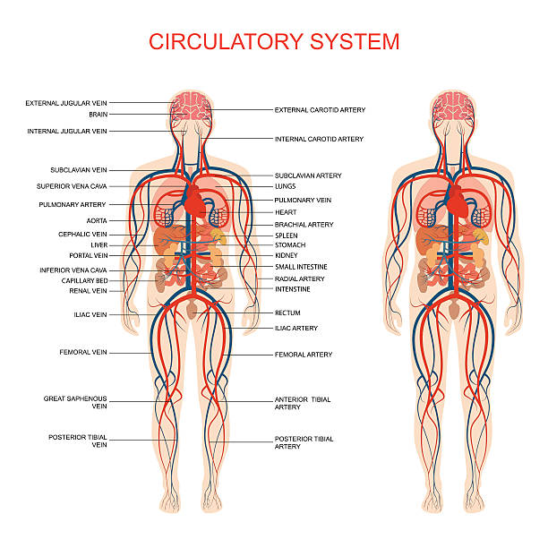
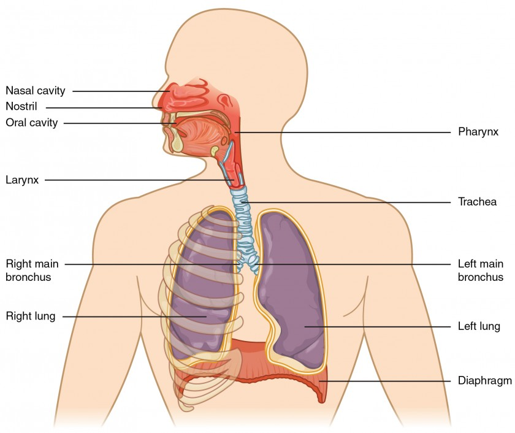

The Circulatory System
The circulatory system transports blood, nutrients, oxygen, carbon dioxide, and hormones throughout the body.
"Your heart works non-stop, even when you're sleeping!"
Key Functions
- Pumps oxygen-rich blood to the body
- Removes waste products like carbon dioxide
- Regulates body temperature
- Transports hormones and nutrients
Diagram
Image: Wikimedia Commons — public domain/CC.
Main Parts & Definitions
- Heart — Muscular pump that keeps blood moving.
- Arteries — Carry blood away from the heart.
- Veins — Return blood to the heart.
- Capillaries — Site of oxygen/nutrient exchange.
- Blood — Fluid carrying oxygen, nutrients, and waste.
Pulse Points (Circulatory System)
Pulse points are places where an artery runs close to the skin and a bone—making the heartbeat easy to feel. These are used to check heart rate and circulation.
Common Pulse Points
- Temporal — at the temple, above the cheekbone.
- Carotid — side of the neck beside the windpipe.
- Apical — left chest, at the heart’s apex (5th intercostal space).
- Brachial — inside upper arm above the elbow crease.
- Radial — wrist, thumb side (most common).
- Ulnar — wrist, little-finger side.
- Femoral — groin, where the leg meets the hip.
- Popliteal — behind the knee.
- Posterior Tibial — just behind the inner ankle bone.
- Dorsalis Pedis — top (dorsum) of the foot.
Quick Reference
| Best For | Pulse Point |
|---|---|
| Everyday pulse checks | Radial |
| Emergency assessment | Carotid, Femoral |
| Blood pressure (stethoscope) | Brachial |
| Foot circulation | Dorsalis Pedis, Posterior Tibial |
| Heart auscultation | Apical |
Diagram

Placeholders shown — replace images with your preferred diagrams if needed.
How to Check Safely
- Apply gentle pressure—too hard can obstruct blood flow.
- For the carotid, check only one side at a time to avoid dizziness.
- Rest 5 minutes before measurement for a resting heart rate.
- Normal resting adult rate: about 60–100 bpm (athletes can be lower).
The Respiratory System
The respiratory system allows oxygen in and removes carbon dioxide — essential for energy production.
"Every breath you take keeps you alive — take a deep one now!"
Key Functions
- Supplies oxygen to blood
- Removes carbon dioxide
- Regulates blood pH
- Enables speech
Diagram
Image: Wikimedia Commons — public domain/CC.
Main Parts & Definitions
- Nose/Nasal Cavity — Filters and moistens air.
- Pharynx — Throat passageway.
- Larynx — Voice box, airway protector.
- Trachea — Windpipe.
- Bronchi — Branches into lungs.
- Lungs — Oxygen enters blood, CO₂ leaves.
- Alveoli — Gas exchange with capillaries.
- Diaphragm — Muscle aiding breathing.